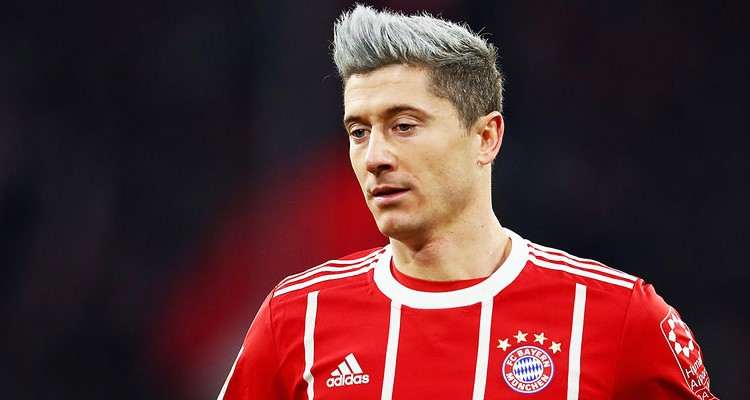
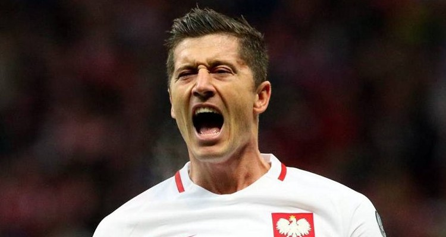

Bundesliga. Robert Lewandowski z kolejnym rekordem
14.03.2017 | 19:34:39 | Tomasz Jóźwiak
Stało się! Robert Lewandowski pobił kolejny rekord. Tego typu informacja coraz rzadziej zaskakuje, ponieważ polski bombardier już niemal w każdym meczu przekracza kolejne bariery. Tym razem 30-latek stał się ex aequo z Pizarro najbardziej bramkostrzelnym obcokrajowcem w historii Bundesligi. To tylko jeden z niewielu rekordów, które w ostatnim czasie padły łupem Roberta. Kolejne również są w jego zasięgu. Lewandowski w klasyfikacji najlepszych strzelców spoza Niemiec na razie musi jeszcze dzielić miejsce z Claudio Pizarro, który mimo 40 lat na karku nadal broni barw Werderu. Peruwiańczyk teoretycznie może odzyskać palmę pierwszeństwa choćby już w następnej kolejce, ale jest to wątpliwe biorąc pod uwagę jego rolę w drużynie „Zielono-białych”. Pizarro w bieżącym sezonie Bundesligi rozegrał tylko nieco ponad 500 minut, a jego najdłuższy występ w jednym meczu nie przekroczył nawet 70 minut. Mimo marginalnej roli w ekipie prowadzonej przez Floriana Kohfeldta, Peruwiańczyk nadal potrafi zaskakiwać skutecznością. Trudno jednak wyobrazić sobie, aby zbliżający się do schyłku kariery Pizarro, który najczęściej spędza na boisku 5-10 minut, mógł jeszcze choćby raz rzucić wyzwanie Lewandowskiemu. Polak już raczej na długo pozostanie rekordzistą pod względem bramek obcokrajowca w najwyższej niemieckiej klasie rozgrywkowej. A to tylko jedno z naprawdę wielu osiągnięć „dziewiątki” Bayernu.
Warto skupić się przede wszystkim na zabójczym tempie w jakim Robert zmierza po kolejne rekordy. Pizarro do zdobycia 195 bramek w Bundeslidze potrzebował niemal dwustu spotkań więcej niż kapitan polskiej reprezentacji. Równie szybko Lewandowski uporał się także ze zdobyciem trzycyfrowej liczby bramek na aktualnym stadionie Bayernu – Allianz Arenie. Oczywiście w kwestii tego wyczynu Polak również stał się pionierem. Trzeba również zauważyć, iż „Lewy” wkroczył na podium najlepszych strzelców Bayernu w historii Bundesligi, nie rozgrywając dla bawarskiego klubu nawet 150 spotkań. Dla porównania, zepchnięty z trzeciego miejsca Wohlfarth potrzebował aż 287 spotkań, aby 119 razy znaleźć drogę do siatki rywala. Równie lichym w porównaniu z Polakiem tempem zdobywania bramek może się „pochwalić” Arjen Robben, którego Lewandowski prześcignął już w marcu ubiegłego roku, zostając najbardziej bramkostrzelnym obcokrajowcem w historii 28-krotnych mistrzów Niemiec.
Snajper Bayernu nie zatrzymuje się także w Champions League. Ten sezon najważniejszych rozgrywek klubowych świata jak na razie zdecydowanie należy do Polaka, a przecież ostatnie zdobycze są zaledwie wierzchołkiem góry bramek zdobytych przez Roberta. Wystarczy przecież przypomnieć sobie wieczór, gdy Lewandowski wzniósł się na absolutne wyżyny swoich umiejętności, w pojedynkę rozstrzeliwując Real Madryt i marzenia „Królewskich” o zdobyciu upragnionej wówczas „decimy”.
Kolejnym rekordem, chociaż już zdecydowanie mniej okazałym jest liczba goli zdobytych w europejskich pucharach przez Polaka. W tej klasyfikacji Lewandowski deklasuje absolutnie wszystkich rodaków, ponieważ 30-latek na swoim koncie zebrał już 53 trafienia, podczas gdy drugi w tym zestawieniu Włodzimierz Lubański może się pochwalić zaledwie 15 bramkami. Z czynnie grających reprezentantów najlepszym strzelcem poza Robertem jest Arkadiusz Milik, który dla Ajaksu i Napoli zdobył w Lidze Mistrzów łącznie…5 bramek, czyli jedną mniej niż Lewandowski przeciwko Realowi Madryt w półfinale tych rozgrywek. Wychowanek Znicza Pruszków odjechał swoim rodakom również w rankingu najlepszych strzelców w historii reprezentacji. W tym przypadku także trudno przypuszczać, aby którykolwiek z zawodników zbliżył się do „Lewego” w najbliższych latach. Szczególnie jeśli Robert wróci do formy prezentowanej np. w eliminacjach do minionych już mistrzostw świata, gdy znów nie darował sobie pobicia kolejnego rekordu – tym razem należącego wcześniej do Predraga Mijatovicia.
Pomimo tak okazałych osiągnięć przed Lewandowskim wciąż pojawiają się nowe wyzwania, którym snajper Bayernu z całą pewnością stawi czoło. Po zrównaniu się z Pizarro Polak może mieć chrapkę na wskoczenie do jeszcze bardziej ścisłego topu strzelców Bundesligi. W najbliższych sezonach spędzonych w Bayernie Robert niemal na pewno prześcignie takich legendarnych zawodników jak Manfreda Burgsmüllera (213 bramek) czy byłego szkoleniowca monachijczyków - Juppa Heynckesa (220), który wielokrotnie doceniał klasę swojej „dziewiątki”. Nieco więcej problemów może przysporzyć Lewandowskiemu dogonienie zajmującego drugie miejsce w rankingu najlepszych strzelców Bundesligi Klausa Fischera, który zdobył 268 goli. Z drugiej strony, jeśli w ciągu kilku najbliższych lat obecny król strzelców ligi nie zdecyduje się na emeryturę np. w MLS, prawdopodobnie drugie miejsce stanie się rzeczywistością. Pozostanie w Bayernie przez kilka następnych lat niemal gwarantowałoby Lewandowskiemu wskoczenie na podium najlepszych strzelców w historii Ligi Mistrzów. Przed 30-latkiem, zajmującym obecnie 6. lokatę, znajdują się van Nistelrooy, Benzema, który wciąż regularnie trafia do siatki, oraz Raul Gonzalez. Lewandowski aktualnie traci do napastnika Realu 7 bramek. Dokładnie tyle samo, ile sezonów więcej rozegrał Francuz w rozgrywkach Ligi Mistrzów. W przypadku Polaka średnią bramek akurat nie trzeba się przejmować. Jeśli skuteczność zostanie podtrzymana, kolejne spotkania staną się idealną okazją do tego, aby Lewandowski zajął drugie miejsce w klasyfikacji najlepszych strzelców Bayernu we wszystkich rozgrywkach. Na razie „dziewiątka” z Monachium okupuje 4. miejsce, ale do zajmującego najniższe miejsce na podium Thomasa Mullera traci zaledwie 5 bramek. Karl Heinz-Rummenige będący wiceliderem rankingu z 217 trafieniami na koncie również nie może spać spokojnie.
Mimo tak niewyobrażalnej liczby bramek, rekordów, indywidualnych osiągnięć oraz stałego utrzymywania formy na wysokim poziomie są wyczyny, których nawet Lewandowski nie zdoła wyrównać. Jeśli chodzi o bramki zdobywane zarówno w Bundeslidze, jak i ogólnie dla pojedynczego klubu w Niemczech we wszystkich rozgrywkach, Robert na pewno nie będzie w stanie dorównać jednemu z najwybitniejszych zawodników w historii – Gerdowi Mullerowi. Biorąc pod uwagę ligowe podwórko, Lewandowski traci do legendarnego niemieckiego napastnika ponad 160 bramek. W kwestii trafień tylko i wyłącznie w barwach „Gwiazdy Południa” sytuacja prezentuje się jeszcze mniej ciekawie z perspektywy Roberta. Musiałby on zdobyć jeszcze ponad 300 bramek, aby móc myśleć o dogonieniu Gerda Mullera. Znając dbałość i perfekcjonizm Roberta można przypuszczać, iż utrzyma on formę jeszcze przez kilka lat, ale próżno oczekiwać, aby w wieku 40 lat nadal ładował po 30 bramek na sezon. Równie niemożliwym wydaje się być zajęcie przez Lewandowskiego na koniec kariery wyższej lokaty niż trzecia w rankingu najlepszych strzelców Ligi Mistrzów. Czołowe dwa miejsca zostaną już na stałe zarezerwowane dla jednych z najlepszych zawodników w historii tej dyscypliny – Messiego i Ronaldo. Lewandowski może dwoić się i troić, ale nadrobienie 50 goli straty do liderującego tandemu, biorąc pod uwagę, że zarówno Leo, jak i CR7 nadal regularnie trafiają do siatki, jest zwyczajnie niemożliwe. W tych wyjątkowych przypadkach Robert będzie musiał zadowolić się drugim lub trzecim miejscem, ale przegranie rywalizacji z pomnikowymi postaciami pokroju Gerda Mullera, Leo Messiego czy Cristiano Ronaldo pod żadnym pozorem nie może być uznawane za porażkę.
Zresztą trudno w ostatnich tygodniach wymieniać nazwisko Roberta Lewandowskiego w połączeniu ze słowem „porażka”. Wszelkie informacje na temat supersnajpera najczęściej dotyczą kolejnych rekordów, barier, które pokonał, legend strąconych z piedestału. Polak stał się po prostu synonimem zwyciężania i przekraczania kolejnych granic, a każdy mecz w jego wykonaniu pretekstem do zagłębienia się w annały historii, aby ujrzeć kto tym razem będzie zmuszony ustąpić miejsca Lewandowskiemu. W tym tygodniu był to Pizarro, wcześniej Wohlfarth, za kilka dni najgroźniejsza broń w arsenale Niko Kovaca z pewnością znajdzie następną, być może jeszcze niczego nieświadomą ofiarę. Ofiarę geniuszu i instynktu strzeleckiego Roberta Lewandowskiego, zmierzającego po kolejne rekordy.
Komentarze czytelników
Przemyślenia? Reakcje? Podziel się swoją opinią na temat artykułu! Zachęcam do dyskusji w komentarzach poniżej, jednocześnie prosząc o zachowanie netykiety oraz kultury wypowiedzi.

Użytkownik 1 | 10.03.2017 | 19:39:01
Piłkarz wybitny to nie ulega wątpliwości artykuł fajny ciekawy choć w w dwóch kwestiach nie mogę się do końca zgodzić po 1 nie pobił jeszcze rekordu jeżeli chodzi o obcokrajowców a jedynie wyrównał ( pobicie kwestią czasu jest oczywiście ) a drugie to czy dwa pierwsze miejsca w LM są zarezerwowane dla CR7 i Leo ?? hmm myślę że jeżeli np taki Mbappe utrzyma formę przejdzie do klubu gdzie będzie zachodził dalej niż z PSG to może im zagrozić choćby dla tego że zaczął w bardzo młodym wieku a wracając do Lewego jakby on był w takim klubie jak Bayern czy innym topowym już w wieku np 22 lat to by spokojnie zjadł Karima Ruuda i Raula
Użytkownik 2 | 10.03.2017 | 19:40:00
Jeśli zostanie w Bayernie i pogra w nim 4-5 sezonów jeszcze to ma szansę na trzecie miejsce w klasyfikacji strzelców UCL. Gerda Mullera nie dogoni. Choć dla Lewego w tym momencie liczy się przede wszystkim zwycięstwo w Lidze Mistrzów. Na piłkarskiej emeryturze widzę Roberta na Florydzie, w klubie Davida Beckhama.